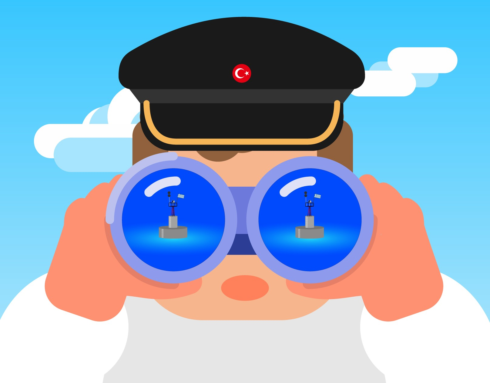

Explainer videos
Beyond Podcast
Role: storyboarding, visual style, animation
A showreel of explainer videos for the Beyond Podcast YouTube channel. I handled storyboarding, visual style, and animation solo, working within tight turnarounds. Each episode’s topic varied, from historical narratives to abstract concepts, requiring a flexible visual language that stayed consistent across the series.
You can watch the videos below
Zourafa Islet: Why is it so important?
1683: Siege of Vienna